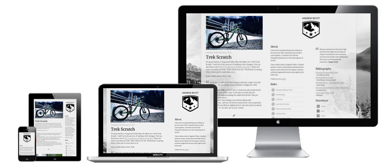

Adaptive Web Design (AWD) dan Responsive Web Design (RWB) |
 |
Apa itu adaptive dan responsive web design? Apakah kamu setuju bahwa teknik tersebut bagus? Mengapa atau mengapa tidak? |
Saya setuju sekali penggunaan adaptive dan responsive web design, karna penggunaan teknik ini akan membuat layout website menyesuaikan diri dengan tampilan device. sehingga akan lebih enakn dilihat diberbagai tampilan device. |
Apakah hadirnya smartphone dan tablet mengubah desain web secara signifikan? Bagaimana kira-kira teknologi baru akan mengubah desain web di masa depan? |
Dengan hadirnya smartphone dan tablet tentunya akan mengubah web secara signifikan baik dalam segi tampilan, menu dan lainnya dan akan disesuaikan dengan sistem operasi dari tablet itu sendiri. |
Bagaimana kira-kira orang yang memiliki kekurangan fisik menggunakan website? Apakah kita perlu menyesuaikan website untuk mereka juga? Solusi apa yang dapat mengatasi keadaan tersebut? |
Memaksimalkan penggunaan content ketika salah satu indra dimatikan seperti mata, mungkin dengan meningkatkan content seperti halnya google translate yang menerjemahkan setiap baris dengan audio visual, text to speach. |
Ide atau konsep apa yang sesuai denganmu saat mempelajari desain web? |
Salah satu referensi untuk desain web saya yaitu templatemonster disini banyak sekali template web yang bagus dan responsive. |